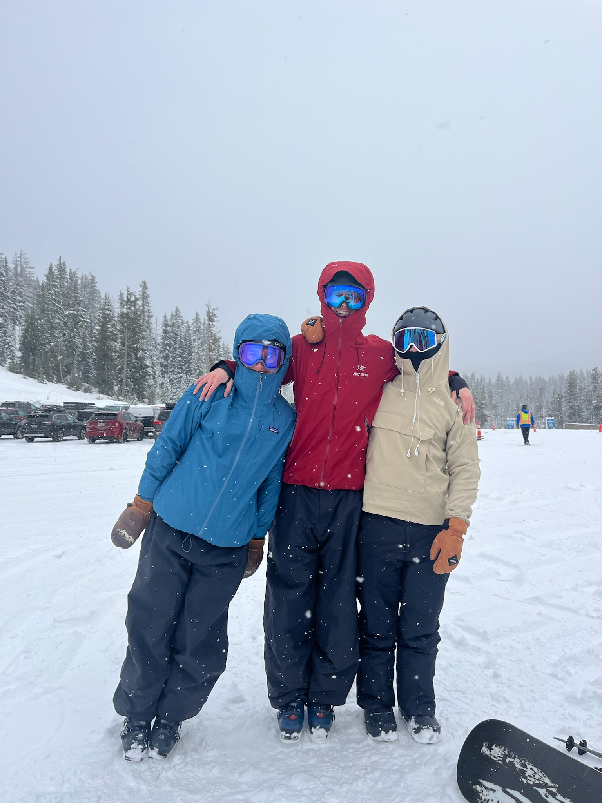
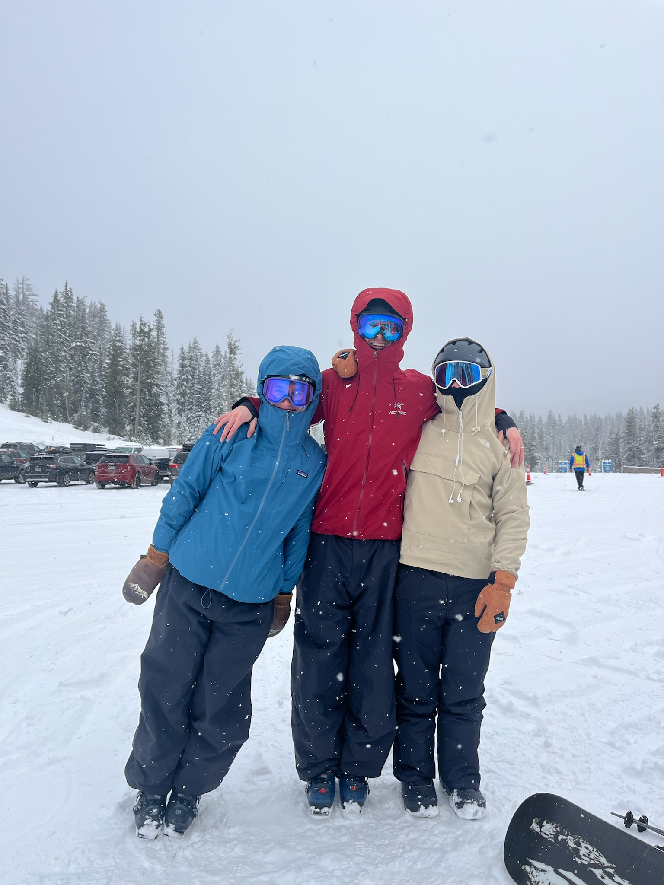

Hudson Smith
I’m an applied mathematics student focused on applied data analysis, forecasting, and interpretable models using real-world data.
My work centers on turning messy operational data into clear, actionable insights. I’m especially interested in demand forecasting, statistical modeling, and methods that balance accuracy with interpretability.
Coursework includes probability theory, linear algebra, and real analysis, alongside hands-on work in Python using pandas, NumPy, scikit-learn, and PyTorch.
Coursework & Tools
Mathematics
Probability
Linear Algebra
Real Analysis
Used for bias/variance analysis, model assumptions, and uncertainty reasoning.
ML & Data Libraries
pandas
NumPy
scikit-learn
PyTorch
Feature engineering, model training, and evaluation pipelines.
Tools
GitHub
VS Code
Jupyter
Methods
Regression
Time Series
Cross-Validation
Feature Engineering
Modeling
Linear Models
Error Analysis
Workflow
EDA
Data Cleaning
How this shows up in my work:
I usually start with simple, interpretable models to build intuition, then layer on complexity only when it actually helps. I spend a lot of time on feature engineering and sanity-checking results so I understand what’s driving the predictions.
Side Quests
 
